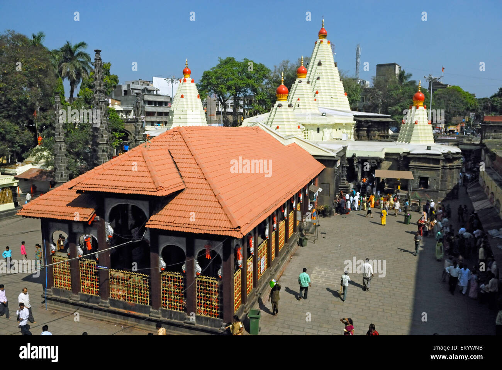

Kolhapur Mahalakshmi Temple


Kolhapur Mahalakshmi Temple
Mahalakshmi Temple (also known as Ambabai Mandir) is an important Hindu temple dedicated to Goddess Mahalakshmi, who is worshipped by locals as Ambabai. Goddess Mahalakshmi is the consort of Lord Vishnu and it is customary among Hindus to visit Tirumala Venkateswara Temple, Kolhapur Mahalakshmi Temple and Padmavathi Temple as a yatra (pilgrimage). It is believed that visiting these temples as a pilgrimage helps achieve moksha (salvation).[1] It is one of the three and a half Shaktipeethas.
Description
The temple of the goddess Mahalakshmi was built by Karnadeva in 634 CE Chalukya reign.[3] Mounted on a stone platform, the murti of the crowned goddess is made of gemstone and weighs about 40 kilograms. The image of Mahalakshmi carved in black stone is 3 feet in height.
The Shri Yantra is carved on one of the walls in the temple. A stone lion (the vahana of the goddess), stands behind the statue. The crown contains a five headed snake. Furthermore, she holds a Matulinga fruit, mace, shield and a pānapātra (drinking bowl).
In Lakshmi Sahasranama of Skanda Purana, Goddess Lakshmi is praised as "Om Karaveera Nivasiniye Namaha" means "Glory to the Goddess who lives in Karaveera" and as "Om Sesha Vasuki Samsevyaa Namaha" means "Glory to Goddess who is served by Adi Sesha and Vasuki". They are the 119th and 698th names of Lakshmi in Lakshmi Sahasranama.
This is also the description mentioned in the Rahasya of Devi Mahatmya.[4] Professor Prabhakar Malshe says, "The name of Karaveera is still locally used to denote the city of Kolhapur".
History
The temple belongs architecturally to the Chalukya empire and was first built in the 7th century.[6] The temple is referred to in multiple Puranas. There is evidence to show that the Konkan king Kamadeo, Chalukyas, Shilahara, Yadavas of Devagiri dynasties visited this city. Adi Shankaracharya also visited.
In 109 CE, Karnadeo cut off the jungle and brought the temple to light. The existence goes back to the 8th century, according to Bhandarkar and Khare.[who?] Itihāsa Chakra indicates that the temple dates back to Mahājanapadā times. In the 8th century, the temple sank down due to an earthquake.
In the 9th century, King Gandavadix extended the temple by building Mahakali Mandir. During 1178–1209, in the reign of Raja Jaysing and Sindhava, South gate and Atibaleshwar Temple were built. In 1218, Yadav king Tolum built Mahadwar and offered jewels to Devi. Furthermore, Shilaharas built Maha Sarasvati Mandir. He, being a Jain, got 64 idols carved.
It is possible that a new idol called Padmavati was installed at that time. Historian Paul Dundas in his book The Jains[7] mentions that Mahalaxmi temple Kolhapur was a Jain temple.[8][9] Sheshashayee Vishnu which is an octagonal structure closer to the eastern gate has a panel of 60 Jain Tirthankaras carvings.
Jains worshipped the idol in the temple as Padmalaya or the abode of Padma or Padmavati, an epithet of Goddess Lakshmi.[12] Furthermore, in Chalukya times, Ganapati before the temple was installed. In the 13th century, Shankaracharya built Nagar Khana and Office, Deepmalas.